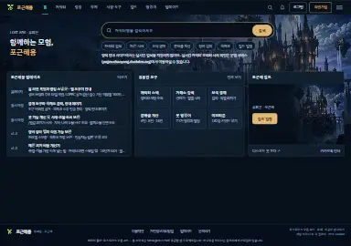
포근해용 UI 갤러리
포근해용 웹 서비스의 과거 운영 기록과 최신 스냅샷(복원된 메인 홈·랭킹·젬 가공 도우미), 그리고 검증용 가상 자료로 구동된 Windows 데스크톱 도우미의 각 기능 화면을 기기별, 테마별로 비교해 보실 수 있는 아카이브입니다.
안내: '검증용 가상 자료' 표시가 있는 데스크톱 도우미 화면의 캐릭터 정보·시세·계정·상자 환산 등 모든 수치는 실제 이용자 정보가 아닌 로컬 검증용 가상 데이터이며 실제 운영 사실이 아니에요. 데스크톱 도우미 화면은 출시 전 로컬 검증용 앱을 직접 구동해 촬영한 것이며, 오버레이 화면의 배경 역시 실제 게임이 아닌 직접 그린 중립 시험용 창입니다. 미출시 기능 화면은 현재 운영 서비스에 배포되지 않은 상태입니다. (웹 아카이브의 랭킹 등 기존 공개 화면 스냅샷은 수집 당시의 공개 순위표를 바탕으로 한 정적 사본입니다.)
선택하신 조건에 해당하는 화면이 없습니다.
웹 서비스
포근해용 웹 서비스의 과거 운영 버전 및 최신 스냅샷 화면입니다.
화면 캡처 시각: 2026-10-16 13:29 (KST) · 원천 기준: c6d2453 + 917e31b8 스냅샷이에요.
메인 홈

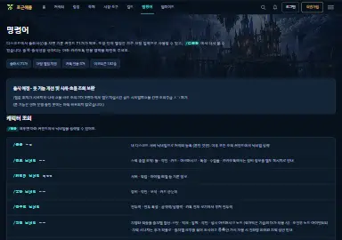

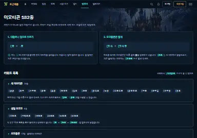

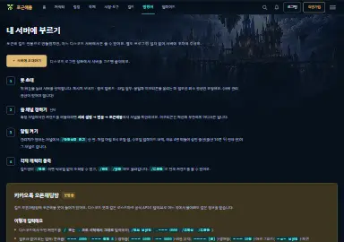


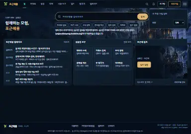

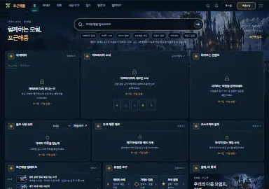

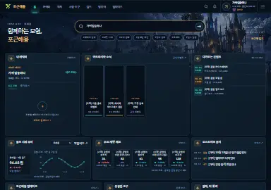


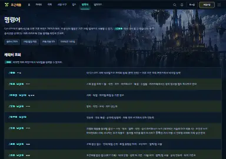

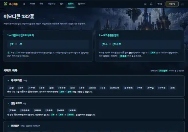

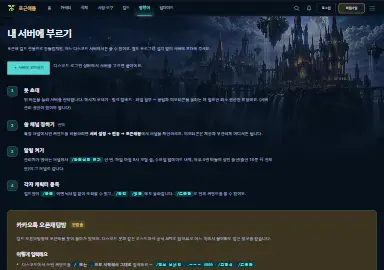

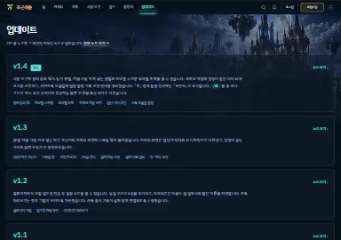

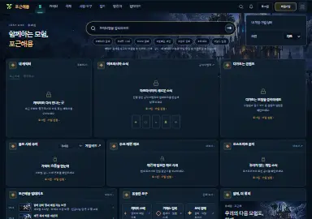

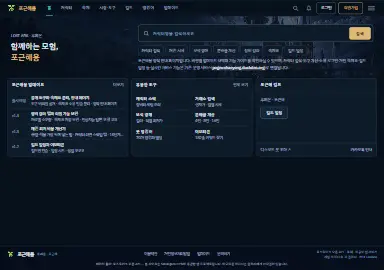

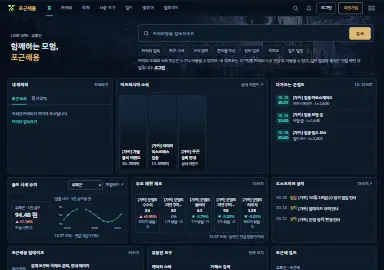
메인 홈 (후보)
실시간 패널이 포함된 새 후보 홈 화면입니다 (운영 미반영).
연결 링크 없음

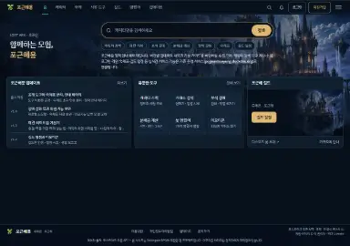
메인 홈 복원 비교안 (후보)
현재 정적 홈에 이전 홈의 성채 일러스트, 알약형 검색, 패널 입체 면, 도구 3×2 타일을 되살려 시각 배치를 비교해 보는 로컬 후보 화면이에요 (공개 홈 미반영, 지운 표어·아이콘 미복원).
연결 링크 없음

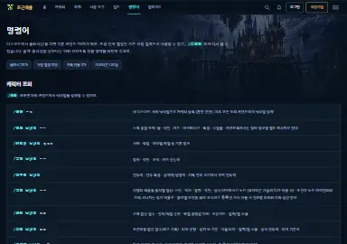

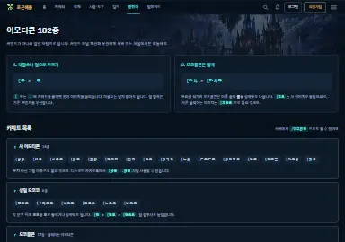

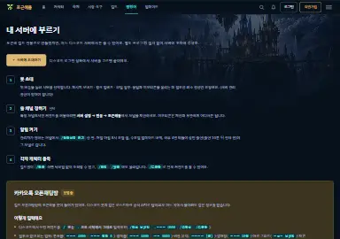

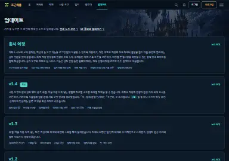

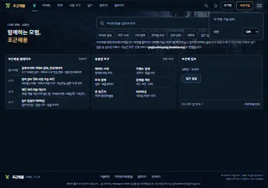
랭킹


캐릭터


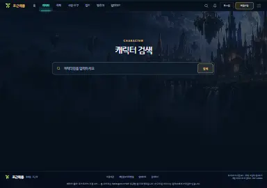

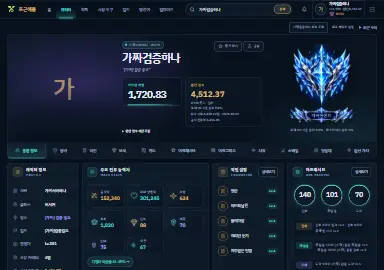

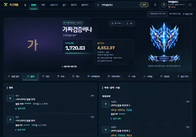

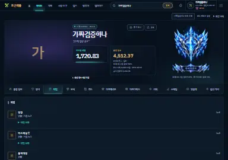

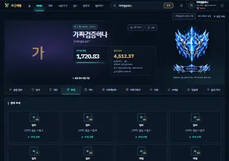

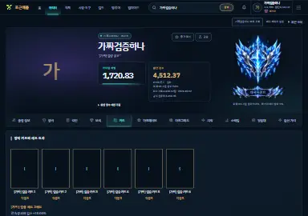

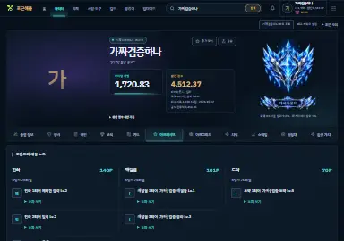

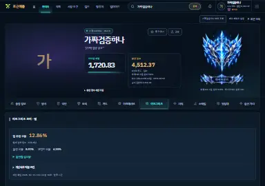

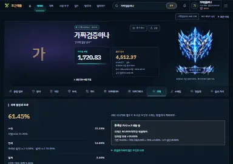

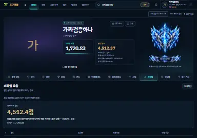

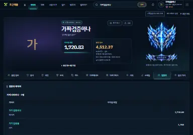

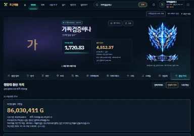

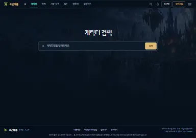
캐릭터 검색 (후보)
비회원 캐릭터 조회를 지원하도록 준비 중인 캐릭터 검색 후보 화면입니다.
연결 링크 없음

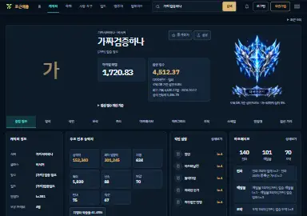
종합 정보 탭 (후보)
레이아웃이 개선된 캐릭터 종합 정보 화면입니다.
연결 링크 없음

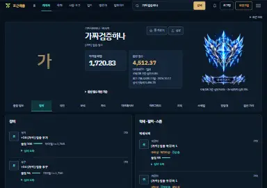
장비 탭 (후보)
연마 단계와 효과를 직관적으로 보여주는 장비 화면입니다.
연결 링크 없음

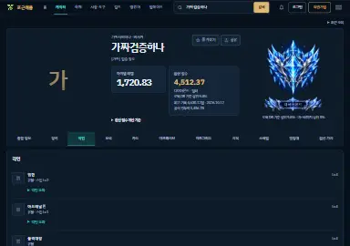
각인 탭 (후보)
각인 활성화 상태를 한눈에 볼 수 있는 각인 화면입니다.
연결 링크 없음

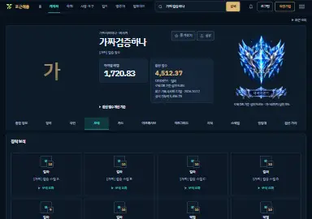
스킬 빌드 탭 (후보)
스킬 배치와 룬을 깔끔하게 정리한 화면입니다.
연결 링크 없음

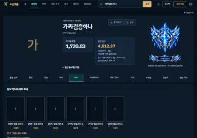
카드 덱 탭 (후보)
달성 단계와 세트 효과를 강조한 카드 화면입니다.
연결 링크 없음

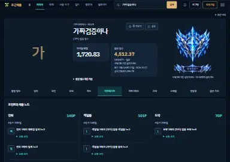
아크 패시브 탭 (후보)
아크 패시브 트리를 보기 쉽게 시각화한 화면입니다.
연결 링크 없음

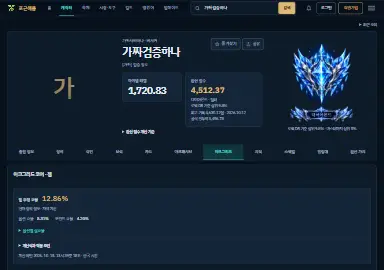
아크 그리드 탭 (후보)
보석 구성과 아크 그리드 효과 점검 화면입니다.
연결 링크 없음

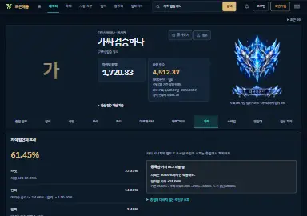
치명타 적중률 탭 (후보)
조건부 치적을 종합 계산해 주는 화면입니다.
연결 링크 없음

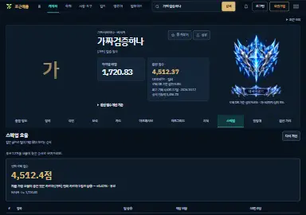
스펙업 가이드 탭 (후보)
골드 대비 성장 효율을 분석하는 화면입니다.
연결 링크 없음

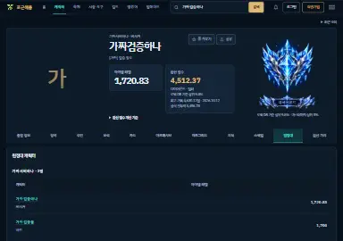
원정대 목록 탭 (후보)
대표 캐릭터와 원정대 캐릭터 목록 화면입니다.
연결 링크 없음

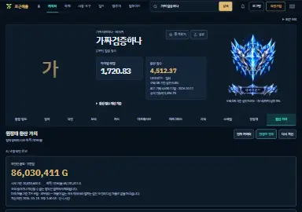
환산 가치 탭 (후보)
시장 시세를 반영한 종합 가치 평가 화면입니다.
연결 링크 없음
시장 · 도구


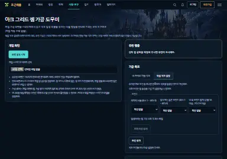


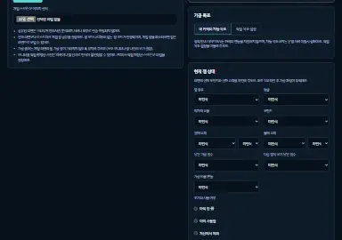

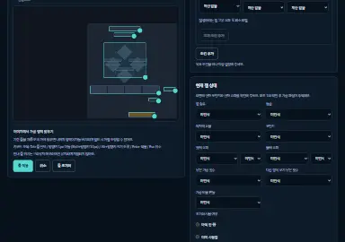


거래소 시세 (후보)
비회원 시세 조회를 지원하도록 준비 중인 거래소 시세 검색 후보 화면입니다.
연결 링크 없음

보석 시세 (후보)
비회원 보석 시세 조회를 지원하도록 준비 중인 보석 경매장 최저가 후보 화면입니다.
연결 링크 없음

분배금 계산기 (후보)
파티 인원별 최적 입찰가 계산 화면입니다.
연결 링크 없음

장비 강화 계산기 (후보)
숨결과 장인의 기운 투입 효율 분석 화면입니다.
연결 링크 없음
숙제표


길드


내 계정


안내 문서


버전별 노트


데스크톱 도우미
Windows PC 전용 로컬 검증본 화면입니다. 화면의 캐릭터·시세·숙제·상자 환산 등 모든 데이터는 로컬 시험용 가상 자료이며, 실제 게임 플레이나 운영 서비스에 배포된 상태가 아닙니다.
화면 캡처 시각: 2026-10-23 23:05 (KST) · 원천 기준: 17bb4c5 + 874dc200 스냅샷이에요.
데스크톱 도우미는 Windows PC 전용 프로그램으로 모바일 화면이 제공되지 않습니다.
실시간 도우미

데스크톱 도우미 홈 · 실시간 (초기 상태)
첫 실행 후 게임 창이 선택되지 않고 캡처가 꺼져 있는 기본 서비스 모드 홈 화면입니다. 왼쪽 사이드바 하단에 캡처 및 서비스 상태 칩이 표시되며, API 키가 등록되지 않은 기본 상태로 준비됩니다.
연결 링크 없음

실시간 전투 보조 분석 화면
직접 그린 시험용 전투 장면 창을 대상으로 실시간 캡처를 구동한 상태입니다. 서포터(합성서폿) 설정이 적용되어 조력 누계, 버프별 기여 배분, 최근 버프 결과(아이덴티티·공증·초각성) 및 낙인 타이머가 표시되며, 모든 수치는 시험용 장면 기반의 추정치입니다.
연결 링크 없음

실시간 파티 신청자 분석 패널
직접 그린 시험용 파티 신청 목록에서 5명의 캐릭터명을 OCR로 판독한 뒤, 클라이언트 조회를 통해 현재 장착 스펙 점수와 티어 라벨(실버 고정·플래티넘·다이아몬드·골드 고정 및 계산 불가)을 산출하여 정리해 주는 패널 화면입니다.
연결 링크 없음

실시간 보상 상자 골드 환산 패널 (지옥 6단계)
직접 그린 지옥 6단계(지하 63층) 시험용 장면 창에서 사용자가 1750 열쇠 구간을 선택했을 때, 4개 보상 상자별 보상 이름과 예상 골드 가치를 계산해 보여주는 패널 화면입니다. 시세는 검증용 합성 시세이며 판매 수익 보장이 아닌 가치 추정치입니다.
연결 링크 없음
캐릭터 분석

아크 그리드 젬

아크 그리드 코어

경매 분배 계산

숙제 현황


출석 연동


화면 및 오버레이 설정

연결 및 서비스 모드

서비스 연결 및 앱 정보 (기본 서비스 모드)
첫 실행 시 기본 서비스 프록시 모드로 설정된 연결 화면입니다. 웹 계정 미연동, API 키 미등록 상태이며 앱 버전(0.1.0)과 개인정보 고지 패널이 표시됩니다.
연결 링크 없음

공식 API 모드 전환 및 키 상태
개인 로스트아크 공식 API 모드로 전환되어 가상 키가 암호화 저장된 상태(키 등록됨)를 보여주는 화면입니다. 키 원문은 노출되지 않으며, 실제 공식 API의 유효성 검증이나 조회 성공을 뜻하지 않습니다.
연결 링크 없음

포근해용 계정 연결 완료 상태
로컬 가상 계정(합성바드)으로 연결되어 숙제표 및 길드 출석 기능을 이용할 수 있는 상태와 세션 만료 일시를 확인하는 화면입니다.
연결 링크 없음
게임 오버레이

전투 보조 게임 오버레이 (시험용 장면)
직접 그린 중립적인 시험용 전투 장면 창 위에 낙인 타이머, 조력 누계, 초각성 결과 팝업을 띄운 제품 오버레이 화면입니다. Windows 전경 상태는 시험 도구로 지정해 촬영되었습니다.
연결 링크 없음

파티 신청자 정보 게임 오버레이 (시험용 장면)
직접 그린 시험용 파티 목록 창 옆에 5명의 가상 캐릭터명에 맞춘 티어 배지와 장착 스펙 점수 라벨(합성기상은 계산 불가)을 띄워 주는 제품 오버레이 화면입니다.
연결 링크 없음

지옥 보상 상자 골드 환산 게임 오버레이 (시험용 장면)
직접 그린 지옥 콘텐츠 시험용 장면 창 위의 4개 보상 상자 위치에 각각 추정 골드 가치 라벨을 띄워 주는 제품 오버레이 화면입니다. 수치는 합성 시세 기준의 추정치입니다.
연결 링크 없음

나락 보상 상자 골드 환산 게임 오버레이 (시험용 장면)
직접 그린 나락 4단계(지하 41층, 1750 구간) 시험용 장면 창 위의 보상 상자 위치에 재련 보조(388,000G), 귀속 각인서 랜덤(216,710G 추정), 귀속 골드(96,000G 추정) 라벨을 띄워 주는 제품 오버레이 화면입니다.
연결 링크 없음